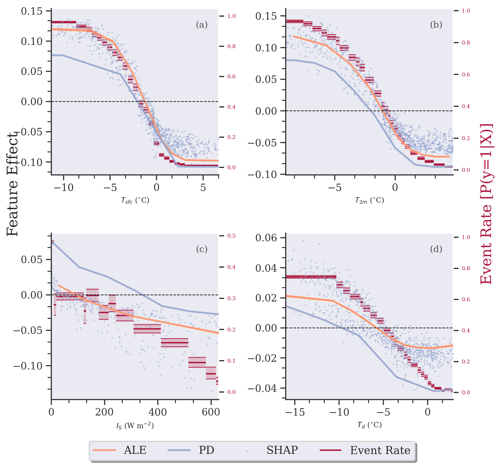

Plotting ALE, PD, and SHAP on the same plot
[1]:
import sys, os
current_dir = os.getcwd()
path = os.path.dirname(current_dir)
sys.path.append(path)
[2]:
import skexplain
import plotting_config
import numpy as np
import shap
from bayeshist import bayesian_histogram, plot_bayesian_histogram
[3]:
estimators = skexplain.load_models()
X,y = skexplain.load_data()
X = X.astype({'urban': 'category', 'rural':'category'})
[4]:
explainer = skexplain.ExplainToolkit(estimators[0],X=X, y=y,)
[5]:
ale_1d_ds = explainer.ale(features=['temp2m', 'dwpt2m', 'swave_flux', 'sfc_temp'],
n_bootstrap=10,
subsample=0.1,
n_jobs=4,
n_bins=10)
[6]:
pd_1d_ds = explainer.pd(features=['temp2m', 'dwpt2m', 'swave_flux', 'sfc_temp'],
n_bootstrap=10,
subsample=0.1,
n_jobs=4,
n_bins=10)
[7]:
results = explainer.load('shap_values.nc')
[8]:
import seaborn as sns
[9]:
from skexplain.plot.base_plotting import PlotStructure
sns.set_theme()
sns.set_style('darkgrid', {'axes.grid' : False})
features = ['sfc_temp', 'temp2m', 'swave_flux', 'dwpt2m']
n_panels=len(features)
plotter= PlotStructure(BASE_FONT_SIZE = 16)
fig, axes = plotter.create_subplots(n_panels=len(features), n_columns=2, figsize=(8,8), dpi=300,
wspace=0.4, hspace=0.35)
for ax in axes.flat:
ax.grid()
colors = list(sns.color_palette("Set2"))
for ax, feature in zip(axes.flat, features):
explainer.plot_ale(ale_1d_ds,
features = [feature],
estimator_names = ['Random Forest'],
add_hist=False,
display_feature_names=plotting_config.display_feature_names,
display_units = plotting_config.display_units,
ax=ax, line_kws = {'line_colors' : [colors[1]], 'linewidth': 2.0},
to_probability=False,
)
# Set add_hist == False since it is already included above.
explainer.plot_pd(pd_1d_ds,
features = [feature],
estimator_names = ['Random Forest'],
ax=ax,
add_hist=False,
display_feature_names=plotting_config.display_feature_names,
display_units = plotting_config.display_units,
line_kws = {'line_colors' : [colors[2]], 'linewidth': 2.0},
to_probability=False,
)
#histdata = X.copy()
#histdata['target'] = y
explainer.plot_shap(features=[feature],
plot_type = 'dependence',
shap_values=results,
estimator_name = 'Random Forest',
display_feature_names=plotting_config.display_feature_names,
display_units = plotting_config.display_units,
interaction_index=None,
color =colors[2],
s = 3,
ax=ax,
alpha=0.5,
to_probability=False,
)
handles, labels = ax.get_legend_handles_labels()
# plot it up
data = X[feature].values.astype(float)
bin_edges, beta_dist = bayesian_histogram(data, y,)
ax_twin = plotter.make_twin_ax(ax)
plot_bayesian_histogram(bin_edges, beta_dist, ax=ax_twin, color = 'xkcd:rouge', label='Event Rate')
h, l = ax_twin.get_legend_handles_labels()
ylabels = ax_twin.get_yticklabels()
[label.set_color('xkcd:rouge') for label in ylabels]
major_ax = plotter.set_major_axis_labels(fig,
xlabel=None,
ylabel_left='Feature Effect',
ylabel_right='Event Rate [P(y=1|X)]', title=None,
ylabel_right_color = 'xkcd:rouge'
)
plotter.set_legend(n_panels, fig, ax, major_ax,
handles=handles+h, labels=['ALE', 'PD', 'SHAP', 'Event Rate'],
bbox_to_anchor = (0.5, -0.3), ncol=4, fontsize=12,
)
plotter.add_alphabet_label(n_panels, axes, pos=(0.9, 0.9))

[ ]: